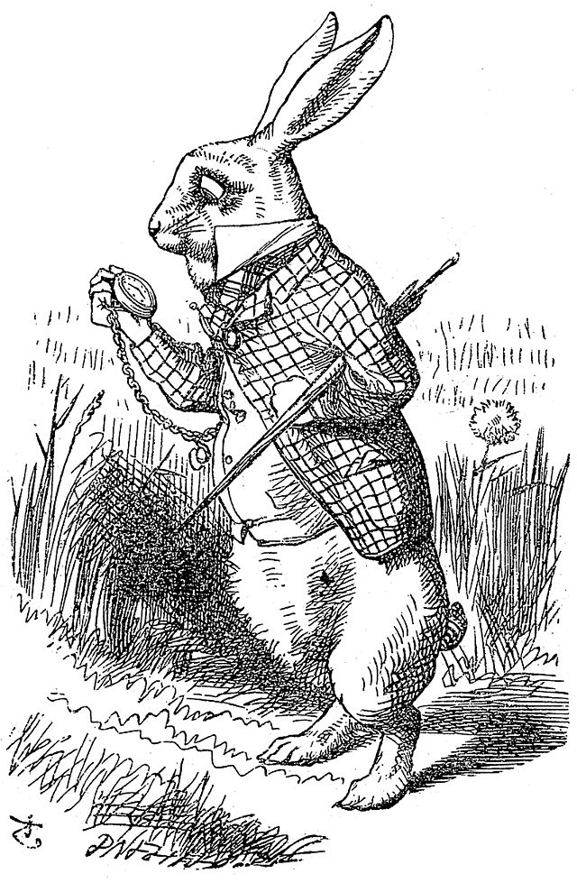

Navigation
PortfolioAbout Me
Web Project 1: Resume
Web Project 1We all have to start somewhere. This assignment was meant for getting comfortable with the basics of HTML. Setting up a basic structure for a website and using the core set of tags for placing things and some light text formatting. This is my resume (as of writing) with CSS embedded into it.
 Pexels, 2025. Source: Pexels
Pexels, 2025. Source: Pexels
Web Project 2: 5 Sections
Web Project 2Now we're cooking with gas. This assignment had us use more advanced CSS like grids to style content broken up into sections. Here I broke down my 5 favorite video games at the time of writing.
 Eric Barone (ConcernedApe), 2016. Source: Steam
Eric Barone (ConcernedApe), 2016. Source: Steam
Wed Project 3: Favorite City
Web Project 3We going global now. This assignment had us talk about a favorite city of ours, real or fictional. Here I broke down Manila, the only foreign city I traveled to during my stint in the Army.
 SM Supermalls, 2025. Source: SM Supermalls
SM Supermalls, 2025. Source: SM Supermalls
Web Project 4: E-book
Web Project 4Bringing everything together. This assignment had us prepare an e-book of a classic children's tale, in this case "Alice in Wonderland". This was the culminating event in everything we've learned in this class.
 Source: Public Domain